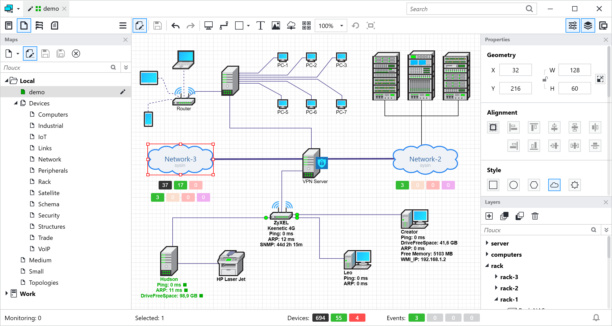

请访问原文链接：Algorius Net Viewer 2024.7.3 (Windows) - 网络可视化、管理、监控和清点 查看最新版。原创作品，转载请保留出处。
作者主页：sysin.org
适用于任何规模计算机网络的可视化、管理、监控和清点综合软件产品

- 超过 160 种 用于创建可读计算机网络图的集合中的设备
- 10 万个 在单个实例中可以监控网络设备数量
- 15 种通知方式可快速通知您网络内事件
- 27 个 报告模板提供有关您网络的客观数据
Algorius Net Viewer 如何帮助管理员
可视化
Algorius Net Viewer 是您的计算机网络指南！方便地显示网络基础设施，并轻松导航。
管理
Algorius Net Viewer 是您的计算机网络控制面板！无需离开工作地点即可掌控计算机和网络设备。
监控
Algorius Net Viewer 是对服务、服务器和其他网络设备的控制。通过 SNMP、WMI 和其他协议获取其当前状态。
清单
Algorius Net Viewer 是一个信息收集和记录保存系统 (sysin)。了解有关设备和软件使用的最新信息。
通知
Algorius Net Viewer 是一种通过电报、电子邮件、短信等方式进行通知的通知。随时了解网络设备的任何不可预见的错误和潜在问题。
报告
Algorius Net Viewer 是报告、日志、图表的生成器。拥有客观信息来分析网络基础设施的工作情况。
网页界面
Algorius Net Viewer 是一个 Web 服务器。从世界任何地方访问网络地图、实时监控、日志、报告和图表。
缩放
Algorius Net Viewer 是一个允许您监控每个实例中超过 100’000 台设备的系统。发展您的网络，该计划将为您提供支持。
为什么使用 Algorius Net Viewer？
优点
Algorius Net Viewer 可以在几秒钟内安装和更新。
这使您可以立即开始使用该应用程序。
安装后无需冗长且昂贵的设置过程。
甚至可以在自动模式下设置和启动服务器。
您不需要编写复杂的多级脚本来配置它。
我们重视您的时间，因此我们努力使复杂的事情变得易于使用。
它是一个单一系统，而不是一组不同的应用程序。
这有助于采用集成方法来服务您的网络基础设施。
这是一个灵活的系统，而不是最终的解决方案。
这使您可以扩展和调整其功能以满足您的特定需求。
它不仅仅适用于大型分布式企业系统。
该应用程序旨在为任何级别的基础设施提供服务。
您不需要大量、昂贵的资源。
即使是中型计算机也足以与数以万计的设备一起工作。
您不需要为每个工作区提供单独的许可证。
在服务器上激活许可证就足够了。
Algorius Net Viewer 应用于 50 多个行业
凭借其友好的界面、广泛的功能集和高性能，Algorius Net Viewer 已成为全球用户的流行产品 (sysin)。由于其设计的用例多种多样，我们的产品已被各行各业的公司选择。
Algorius Net Viewer 非常适合任何拥有计算机网络的组织。
下载地址
Algorius Net Viewer 2024.7.3 for Windows x64, Release date: July 8, 2024
- 百度网盘链接：
[EoD]
更多：Windows 下载汇总

文章用于推荐和分享优秀的软件产品及其相关技术，所有软件默认提供官方原版（免费版或试用版），免费分享。对于部分产品笔者加入了自己的理解和分析，方便学习和研究使用。任何内容若侵犯了您的版权，请联系作者删除。如果您喜欢这篇文章或者觉得它对您有所帮助，或者发现有不当之处，欢迎您发表评论，也欢迎您分享这个网站，或者赞赏一下作者，谢谢！
 支付宝赞赏
支付宝赞赏  微信赞赏
微信赞赏赞赏一下
敬请注册！点击 “登录” - “用户注册”（已知不支持 21.cn/189.cn 邮箱）。 请勿使用联合登录（已关闭）。